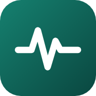

سياسة الخصوصية وحذف البيانات
الخلاصة
«موصل» يعمل على جهازك. لا نجمع أي بيانات شخصية أو صحية، ولا نرسلها إلى أي خادم، ولا نبيعها ولا نشاركها مع أي جهة؛ وما ترسله بنفسك في استشارة يذهب مباشرة إلى الطبيب الذي تختاره، ولا نستخدم إعلانات أو أدوات تتبّع أو تحليلات.
ما الذي يُحفظ على جهازك فقط
- بياناتك الأساسية التي تُدخلها: الجنس والعمر والطول والوزن والأمراض المزمنة.
- بطاقتك الصحية (فصيلة الدم والحساسية والأدوية وجهة الاتصال في الطوارئ) إن ملأتها.
- سجل التقييمات، والمواقف الخاصة، والتذكيرات، وملفات أفراد العائلة.
- القياسات (الضغط والسكر والنبض والأكسجين والحرارة والوزن) التي تُدخلها أو تستوردها.
لا تُحفظ أبدًا تقييمات الصحة الجنسية ولا التقييمات التي تظهر فيها علامات أزمة نفسية.
البلوتوث وتطبيقات الصحة
- البلوتوث: يُستخدم فقط للاتصال بأجهزة القياس التي تختارها أنت واستقبال قراءاتها. لا نستخدم البلوتوث لتحديد موقعك.
- Apple Health (آيفون) وHealth Connect (أندرويد): بعد موافقتك نقرأ فقط النبض والضغط والأكسجين والسكر والحرارة والوزن لآخر 30 يومًا لعرضها لك داخل التطبيق. لا نكتب أي بيانات في هذه التطبيقات، ولا تغادر القراءات جهازك، ولا تُستخدم لأي إعلان أو غرض آخر. يمكنك سحب الإذن في أي وقت من إعدادات الهاتف.
- الإشعارات: تُستخدم فقط لتذكيرات الدواء والقياس التي تضبطها بنفسك.
- الاستشارات: عند طلبك استشارة يُرسَل نصها وما ترفقه من تسجيل صوتي أو صور أو فيديو مباشرة من هاتفك إلى واتساب الطبيب الذي تختاره، ولا يمر بأي خادم لنا ولا نحفظه. ويخضع ما يصل للطبيب لسياسة واتساب وللسرية المهنية للطبيب. قائمة الأطباء المعتمدين وحدها تُحمَّل من الإنترنت (أسماؤهم وتخصصاتهم وأرقامهم)، دون إرسال أي بيانات عنك.
- رقم الاستشارة: عند إرسال استشارة نسجّل رقمها واسم الطبيب ووقتها فقط — دون نص الشكوى أو أي مرفق أو بيانات عنك — لنضمن حقك في التقييم والشكوى واسترداد القيمة.
- الدعم والتواصل: ما تكتبه بنفسك في رسالة دعم (الاسم ورقم الموبايل اختياريًا، والتفاصيل) يصل إلى إدارة «موصل» فقط للرد عليك، ويُحذف بعد إغلاق الطلب بستة أشهر، ويمكنك طلب حذفه في أي وقت.
- الكاميرا ومعرض الصور (اختياري): فقط عندما تضغط «أضف صورة» أو «أضف فيديو» في الاستشارة.
- الميكروفون (اختياري): عند ضغطك «تحدّث» فقط، لتحويل صوتك إلى نص بواسطة خدمة التعرف على الكلام في نظام هاتفك أو متصفحك.
حذف البيانات
لأن بياناتك على جهازك فقط، فأنت تتحكم فيها كاملة:
- من داخل التطبيق: «عن التطبيق» ← «حذف كل بياناتي»، فيُحذف نهائيًا كل شيء: البيانات وملفات العائلة والتقييمات والقياسات والتذكيرات والأجهزة المقترنة، وتُلغى الإشعارات المجدولة.
- يمكنك أيضًا حذف أي تقييم أو قياس أو تذكير منفردًا.
- إلغاء تثبيت التطبيق يحذف كل بياناته من الهاتف.
لا توجد لدينا نسخة من بياناتك على أي خادم، لذلك لا يلزم أي طلب لحذفها، ولا يمكننا استرجاعها بعد حذفها.
الأطفال
التطبيق موجّه لمن بلغ 18 عامًا، ويمكن لولي الأمر إنشاء ملف لطفله تحت إشرافه.
طبيعة الخدمة
«موصل» أداة تثقيف واسترشاد صحي وليس جهازًا طبيًا ولا بديلًا عن الطبيب. في الطوارئ اتصل بالإسعاف 123.
التواصل والتعديلات
للاستفسار عن الخصوصية تواصل معنا عبر بريد المطوّر المنشور في صفحة التطبيق على Google Play أو App Store. وإذا عُدّلت هذه السياسة سيُحدَّث تاريخها أعلى الصفحة.
© 2026 موصل — Maro Shahaly
Summary
Mosel runs on your device. We do not collect, transmit, sell or share any personal or health data, and we use no ads, trackers or analytics.
What is stored on your device only
- Basic details you enter: sex, age, height, weight and chronic conditions.
- Your health card (blood group, allergies, medicines, emergency contact), if you fill it in.
- Assessment history, special notes, reminders and family member profiles.
- Readings (blood pressure, glucose, pulse, oxygen, temperature, weight) you enter or import.
Sexual-health assessments and assessments showing signs of a mental-health crisis are never saved.
Bluetooth and health apps
- Bluetooth: used only to connect to measuring devices you choose and receive their readings. Bluetooth is never used to determine your location.
- Apple Health (iPhone) and Health Connect (Android): with your permission we read only heart rate, blood pressure, oxygen saturation, blood glucose, body temperature and weight for the last 30 days, to show them to you inside the app. We never write to these apps; the data never leaves your device and is never used for advertising or any other purpose. You can revoke access at any time in your phone settings.
- Notifications: used only for the medicine and measurement reminders you set.
- Consultations: when you request a consultation, its text and any voice note, photos or video you attach go directly from your phone to the WhatsApp of the doctor you choose. They never pass through or get stored on any server of ours, and are subject to WhatsApp's policy and the doctor's professional confidentiality. Only the list of verified doctors (names, specialties and numbers) is downloaded, without sending any data about you.
- Consultation number: when you send a consultation we record only its number, the doctor and the time — never the complaint text, attachments or any data about you — to protect your right to rate, complain or get a refund.
- Support & contact: what you write yourself in a support message (optional name and mobile number, and the details) reaches only the Mosel team so we can reply, is deleted six months after the request is closed, and you can ask us to delete it at any time.
- Camera and photo library (optional): only when you tap “Add photo” or “Add video” in a consultation.
- Microphone (optional): only when you tap “Speak”, to turn your voice into text using your phone's or browser's speech recognition.
Data deletion
Because your data lives only on your device, you are in full control:
- In the app: About → Delete all my data permanently deletes everything — profiles, family members, assessments, readings, reminders and paired devices — and cancels scheduled notifications.
- You can also delete any single assessment, reading or reminder.
- Uninstalling the app removes all of its data from your phone.
We hold no copy of your data on any server, so no deletion request is needed, and deleted data cannot be recovered.
Children
The app is intended for users aged 18 and over; a parent or guardian may create a profile for a child under their supervision.
Nature of the service
Mosel is a health information and guidance tool. It is not a medical device and does not replace a doctor. In an emergency, call your local emergency number (123 in Egypt).
Contact and changes
For privacy questions, contact us via the developer email shown on the app's Google Play or App Store page. If this policy changes, the date at the top will be updated.
© 2026 Mosel — Maro Shahaly